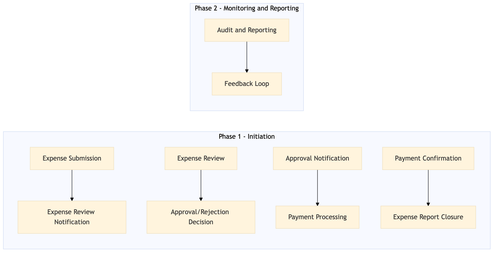

This process document outlines the Manager Approval Workflow for TMC Expense and Payments, detailing how expenses are submitted, reviewed, and approved by managers.
| Trigger | An employee submits an expense report through the Concur Expense system. |
| Outcome | The manager approves or rejects the expense report, with successful approval leading to payment processing. |
| Systems | Concur Expense S/4HANA Amex Corporate Card Analytics Cloud Tableau |

Click to enlarge
| Step | Name & Pain Point | Role | System | Input | Output | KPI | Flags |
|---|---|---|---|---|---|---|---|
| 1.1 | Expense Submission Complexity in categorizing expenses | Employee | Concur Expense | Expense Report | Submitted Expense Report | 95% of expenses submitted within 24 hours | ⚠ Exception |
| 1.2 | Expense Review Notification High volume of notifications | Manager | Concur Expense | Notification of Submitted Report | Acknowledgment of Receipt | 90% of managers review reports within 48 hours | ⚠ Exception |
| 1.3 | Expense Review Lack of clear guidelines for review | Manager | Concur Expense | Submitted Expense Report | Reviewed Expense Report | 85% of reports reviewed without errors | ◆ Decision |
| 1.4 | Approval/Rejection Decision Inconsistent approval criteria | Manager | Concur Expense | Reviewed Expense Report | Approved or Rejected Expense Report | 80% of reports approved within 72 hours | ◆ Decision |
| 1.5 | Approval Notification System downtime affecting notification delivery | Employee | Concur Expense | Approved or Rejected Report | Notification of Approval/Rejection | 75% of employees receive notifications within 24 hours | ⚠ Exception |
| 1.6 | Payment Processing Integration issues between systems | Finance Team | S/4HANA, Amex Corporate Card | Approved Expense Report | Processed Payment | 70% of payments processed within 5 business days | ⚠ Exception |
| 1.7 | Payment Confirmation Delayed payments due to manual processing | Employee | Concur Expense, Amex Corporate Card | Processed Payment | Confirmation of Payment | 65% of employees receive payment confirmation within 24 hours | ⚠ Exception |
| 1.8 | Expense Report Closure Difficulty in tracking report status | Employee | Concur Expense | Confirmed Payment | Closed Expense Report | 60% of reports closed within 7 days | ⚠ Exception |
| 1.9 | Audit and Reporting Data accuracy issues in reporting | Finance Team | Analytics Cloud, Tableau | Closed Expense Reports | Expense Audit Report | 55% of reports audited within 30 days | ⚠ Exception |
| 1.10 | Feedback Loop Lack of user-friendly feedback mechanisms | Employee, Manager | Concur Expense | Expense Audit Report | Feedback and Improvements | 50% of feedback provided within 7 days | ⚠ Exception |